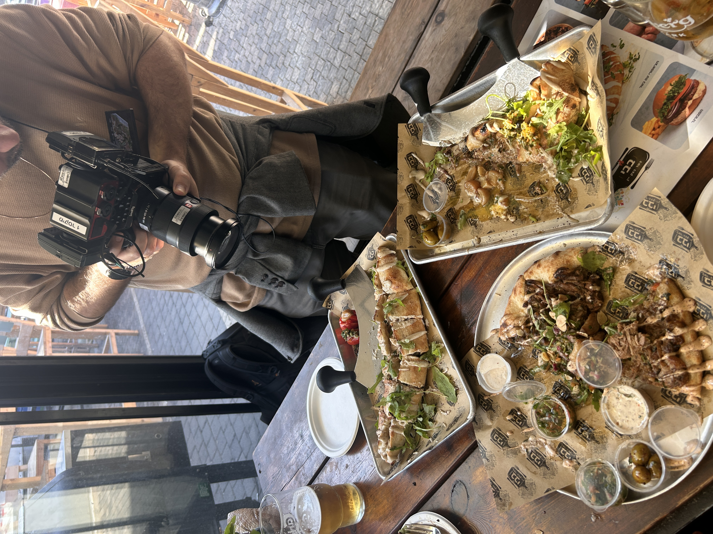
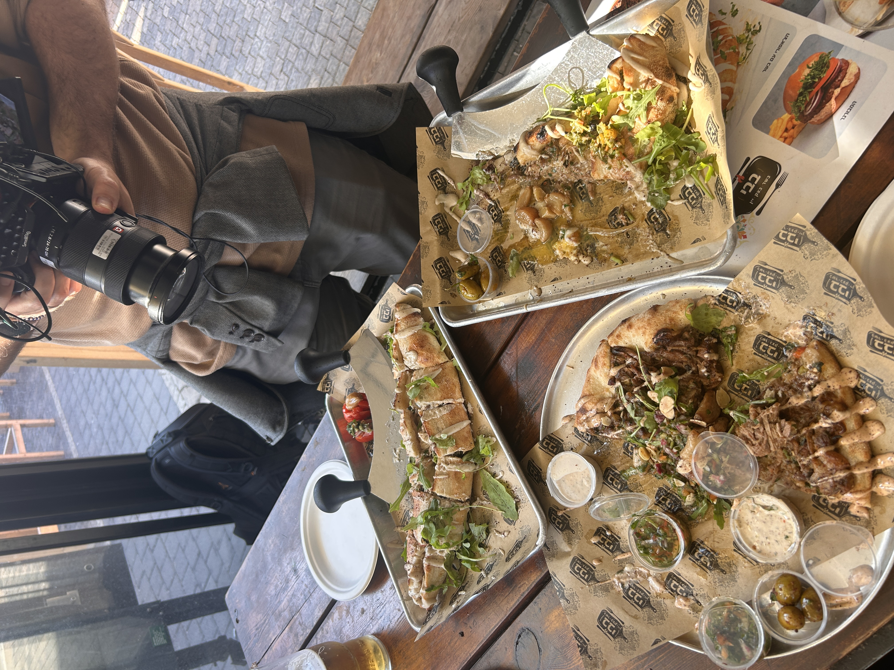

קובי לקח אותי לעפולה. קובי הוא סטנדאפיסט, שף ועפולאי, ואנחנו עמדנו בפתח השוק המתחדש של העיר — מקום שלקחו בו את כל המבנים הקטנים והישנים והפכו אותם לעסקים קטנים. ברים, מסעדות, פלאפל, סביח. לעיר קטנה שמנסה לעשות יוזמה קולינרית, זה משהו קצת אחר. שלוש תחנות, אמר לי קובי. נקניקייה, בשר מעושן, וקינוח. יאללה.
התחנה הראשונה היא קיוסק ירוק על הציר המרכזי של עפולה, שמוכר גם בתור נקניקיות צ'ינאוה. בוטקה קטן, מאוד לא חגיגי ולא מפואר, פתוח 24 שעות כבר 45 שנה. שאלתי אישה שעמדה בתור כמה שנים היא אוכלת כאן. היא אמרה שהיא בת 62 ושהיא באה מאז שהיא ילדה.

נקניקיות צ'ינאוה
קיוסק ירוק · 45 שנה · פתוח 24/7
זה מקום שמאגד בתוכו את כל יושבי העמק. ערבים, אשכנזים, מזרחים, כולם באים לפה — גם הקיבוצניקים. אתה יכול לשאול את כל העפולה, אמר לי קובי, נקניקיות צ'ינאוה זה המספר אחד. אחרי בילויים, לפני בילויים, בין עבודה לעבודה. אין עפולאי שלא דרך פה.
"אתה יכול לשאול את כל העפולה, נקניקיות צ'ינאוה זה המספר אחד. אחרי בילויים, לפני בילויים, בין עבודה לעבודה."
— קובי format_quote
בדיוק שהגיעה תורנו להזמין — נגמרו הלחמניות. אבל לא לדאוג. טלפון מהיר למאפיית ליאור, ותוך כמה דקות הגיע בטנדר גדול הבן של האופה, עם משלוח טרי. ככה זה עובד פה. הלחמניות לא השתנו, הנקניקייה לא השתנתה, הסלטים אותם סלטים, הכל מהאזור. נקניקייה בלחמנייה, בדיוק כמו בשנות ה-80.
"אני לא הולך להגיד לך שזה הנקניקייה הכי טורפת שאכלת בחיים שלך, אבל זה מין זיכרון צרוב."
— קובימה שיפה בצ'ינאוה, זה שזה קצת כמו עונות השנה. בבוקר באה אוכלוסייה אחת, של עובדים ומשרדים. בלילה מפורק פה. אווירה לפעמים מלחיצה, ג'אמאות של אנשים קשים, ולמחרת מתחילים יום חדש. מקומות כאלה הם חשובים — רגליים על הקרקע של עיר שהולכת ומשתנה. רק הקיוסק המשונה הזה עדיין עומד.
בין צ'ינאוה לבאבי מפרידות רק כמה דקות הליכה, אבל גם העיר משתנה מסביב. פתאום יש יותר בתי עסק, פתאום סצנה קטנה של שוק. באבי — בשר, בצק ויין. שם חיכה לנו שמואל, שהוא נצרתי במקור אבל עובד בעפולה כבר 20 שנה. הוא גם זה שהביא סושי לעפולה בפעם הראשונה.

באבי
בשר בצק ויין · שוק עפולה · בשרים מעושנים
צחקו עלינו בהתחלה, סיפר שמואל. באפולה קישרו ישר סושי לשרצים. אבל הוא לא ויתר. לקח רול עם דף סויה במקום אצה ושניצל בפנים. תוך שנתיים זה נהיה הסניף הכי חזק של הרשת בארץ. הרול הכי נמכר? רול סושי שניצל. עכשיו הוא מביא לעפולה בשר מעושן ופיצה עם אסאדו.
"צחקו עלינו בהתחלה, אמרו שאנחנו משוגעים. באפולה קישרו ישר סושי לשרצים, אבל תוך שנתיים זה נהיה הסניף הכי חזק של הרשת בארץ."
— שמואל, באבי format_quote
הבצק עובר התפחה של 48 שעות, מקמח איטלקי. הבשר — אסאדו ובריסקט — שורה לילה במקרר, נכנס למעשנה שש עד שמונה שעות, ואז לילה שלם בתנור על מאה מעלות. 75 אחוז מהקהל שלנו הוא לא עפולאי, הודה שמואל. קודם כל מגיעים תושבי חוץ, ואחר כך העפולאים מגיעים. הם מאוד מקובעים. תן להם צ'ינאוה, שווארמה, פיצה עם קצ'אפ.
"אני בדרך כלל לוקח את השנה הראשונה, שנצטרך ממש לחיות בצמצום, להביא כסף מהבית, בשביל שבאמת אנשים יכירו את המוצר."
— שמואל, באבייצאנו מבאבי, חצינו את השוק, והמשכנו לתחנה השלישית. קובי לקח אותי דווקא דרך הרחובות הפחות ציוריים של העיר, דרך כל המוסכים והפנצ'ריות. שאלתי אותו מה חסר בעפולה והוא אמר שהכי חזק של פריפריה זה לא ההמבורגר והשווארמה, אלא המפרום והקובה. ובעפולה, דווקא, אין מספיק ייצוג למטבח הזה.
מקלות וניל נמצא באמצע אזור תעשייה של עפולה, בין פנצ'ריות ומוסכים. אם המקום הזה היה בשנקין, אמר קובי, היית עומד 45 דקות בתור כל יום. בפנים קיבל אותנו איגל, הבעלים והקונדיטור. הכל מוכן מאפס — מגלידות לשוקולד, למאפים, לעוגיות, למקרונים.
מקלות וניל
פטיסרי · אזור תעשייה · הכל מאפס
איגל מכין גם את הקפה בעצמו. יש לו מכונת קלייה, ואתה שותה קפה שנקלה לפני שבוע. שאלתי מה חייבים לטעום ובלי לחשוב הוא אמר: עוגיית שוקולד. אין לקוח שנכנס ולא לוקח את זה. שלושה סוגים של שוקולד מעורבים ביחד, פצצה.
"הכל אנחנו מכינים פה מאפס. אין שום מוצר שנמכר שלא עשינו אותו פה. מגלידות לשוקולד, למאפים, לעוגיות, למקרונים."
— איגל, מקלות וניל format_quote
אבל גולת הכותרת הייתה הקינוח בצבע ירוק מהפנט — על טהרת הפיסטוק. טארט עם פרליני פיסטוק, בסיס של פיסטוק, וקרם של פיסטוק מלמעלה. הכל תוצרת בית. טעמתי ומשהו בי רצה לבכות. העדינות, חומר הגלם כל כך ניכר. מקום כזה, באזור תעשייה של עפולה, הוא פשוט מתנה.
עפולה היא מין משמש גדול כזה, אמר קובי כשנפרדנו. גם של פעם, גם של מתחדש. התחלנו בנקניקייה של הילדות, המשכנו לבשר מעושן מפתיע בשוק, וסיימנו בפטיסרי שגרם לי לקנות עוגיות הביתה. ובעיקר, יש פה עוד המון פוטנציאל שיכול לעוף לשמיים.